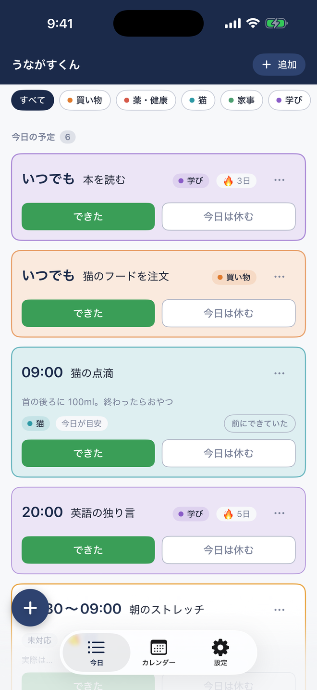
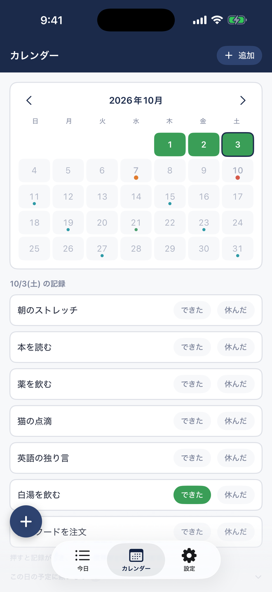
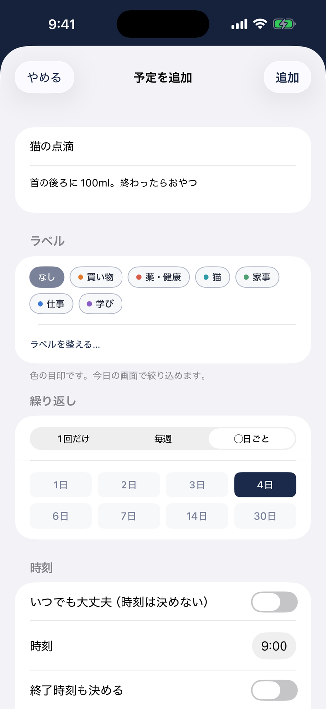

今日やることがカードで並びます。色つきのラベルで仕分けでき、上のチップで絞り込めます。左下の「＋」は親指の届く場所に指で動かせます。

カレンダーでは、できた日だけに色が付きます。先の日を押すと、その日の予定を確かめられます。

登録は、繰り返しを「1回だけ・毎週・◯日ごと」から選ぶだけ。選んだ内容は、その場で日本語の一文にして確かめられます。
Chrome 拡張の「うながすくん」を、iPhone で使えるアプリに作り直したものです。時間が来たら「いまは○○の時間です」と知らせ、できたかどうかをボタン1つで記録します。サイトやアプリをブロックしたり、できなかった日を責めたりはしません。Mac 版も同じアプリとして用意していて、いま Apple の審査を受けています。
できること
- 予定の時間に通知が届きます。「できた」「今日は休む」は、その場でボタン1つで記録できます
- 繰り返しは「1回だけ」「毎週（毎日・平日・週末、または曜日を選ぶ）」「◯日ごと」から選べます。「◯日ごと」は済ませた日から数え直すので、薬や通院、手入れのような予定に向いています
- 予定ごとに「早めのお知らせ」を決められます。病院の予約のように、1時間前に知りたい予定に使えます
- 色つきのラベルで予定を仕分けできます。今日の画面では、ラベルごとに絞り込めます
- カレンダーでは、先の予定と、これまでの記録を見返せます。色が付くのはできた日だけで、達成率は出しません
- 休んだ日には「実際は何をしていたか」を一言残せます。あとで見返すと、自分を責める代わりに予定の側を直せます
- 予定と記録は、自分の iCloud にだけ入ります。iPhone と Mac のあいだで自動で揃い、開発者の側からは見えません。アカウントの登録も要りません
iPhone アプリApp StoreiCloud で同期無料広告なし
関連
パソコンのブラウザで使う Chrome 拡張版のうながすくん もあります。